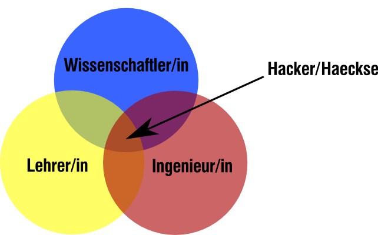

Eine neue Hackerethik
SIGINT 2012
„Handle so, daß die Maxime deines Willens jederzeit zugleich als Prinzip einer allgemeinen Gesetzgebung gelten könne.“
Immanuel Kant, 1785
Insgesamt fehlt Handlungshilfe.

| Table of Contents | t |
|---|---|
| Exposé | ESC |
| Full screen slides | e |
| Presenter View | p |
| Source Files | s |
| Slide Numbers | n |
| Toggle screen blanking | b |
| Show/hide slide context | c |
| Notes | 2 |
| Help | h |